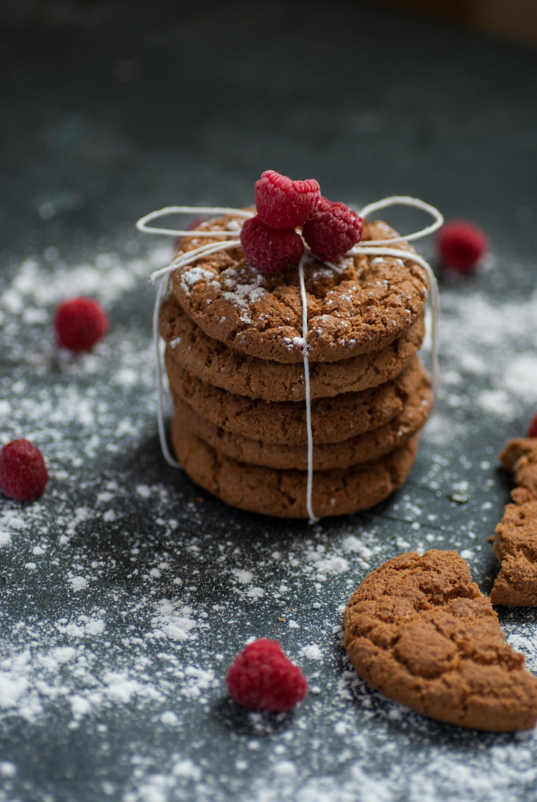

Grandma's Ginger Cookies

Description
These ginger cookies come from a recipe from my great grandmother. While our family refers to their ginger base, they have a strong molasses flavor, that also helps with their chewiness.
Ingredients
- 1.5 C shortening
- 2 C sugar
- 1/2 C molasses
- 2 eggs
- 4 ts baking soda
- 1 ts salt
- 4 C floud
- 2 ts cinnamon
- 2 ts ginger & cloves
Steps
- Mix shortening, sugar, add eggs.
- Add molasses.
- Mix well.
- Add all dry ingredients.
- Chill
- Form in balls.
- Roll in sugar.
- Press and bake 375 for 8-10 minutes.
Return to Home